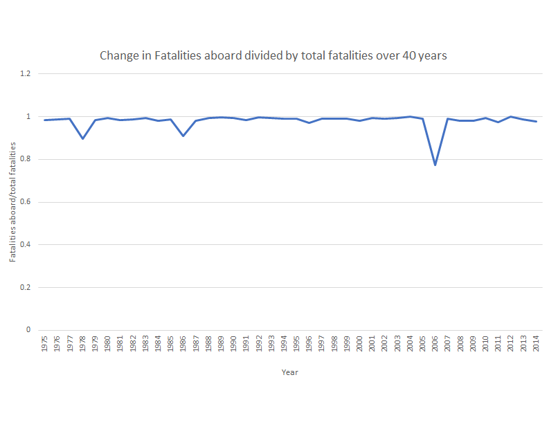
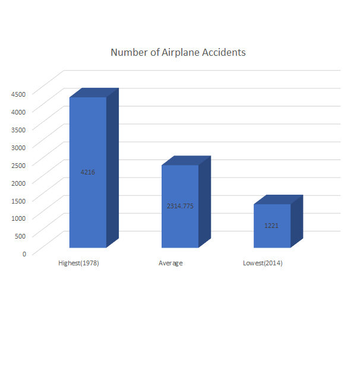
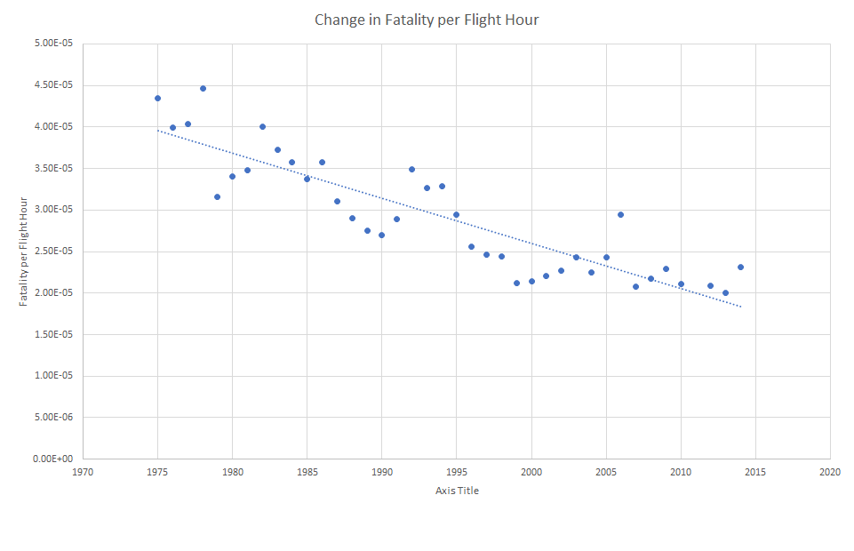
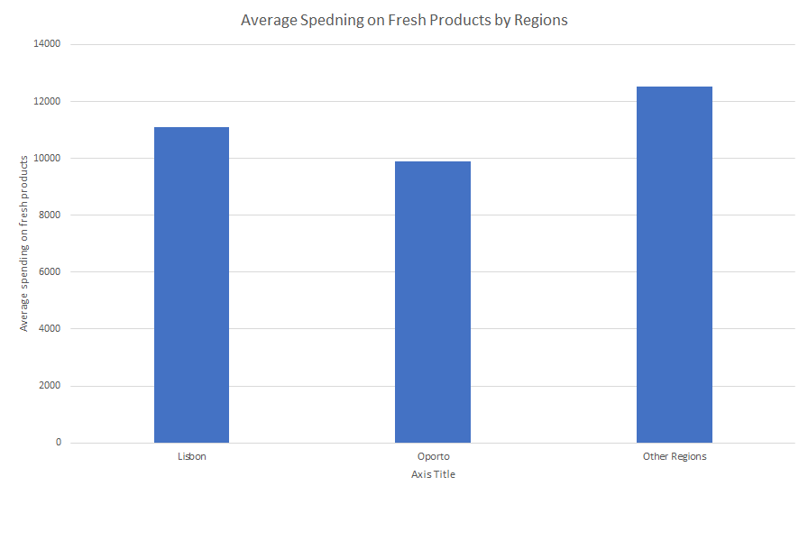
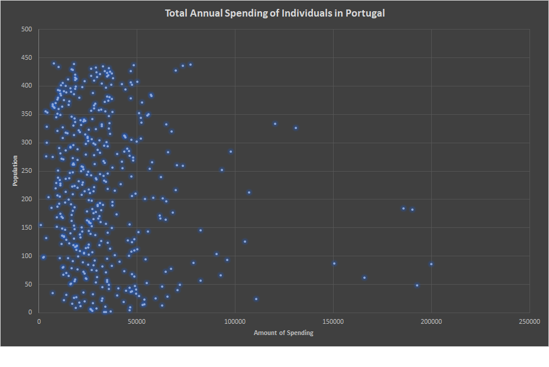
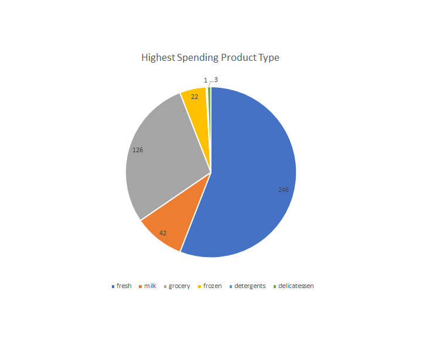

(Lab1)
I am a very passionate soccer fan, so I would love to work with soccer related statistical data such as winning team's percentage of possession, number of goals of players in certain team, or pass succesful rate of a team. Data is really important in interpreting sports games. Some crucial statistics may explain why certain team has a higher winning rate. I am specificaly interested in Liverpool FC's relevant statistics that led to team's success in early 2018-2019 English Premier League season. Since there are so much data, it will also be important to decide what kinds of data in a game I want to use. Liverpool's team color is fast and aggressive attack. Therefore, I will focus on the relationship of succesful pass rate, pass times, and shooting rate to an outcome of a game.
(Lab2)
For Lab2, I am interested in analyzing various data that are in json or csv form. The first data that I am analyzing is a collection of ariplane accidents and fatalities statistics between 1975 and 2014. I am going to code set of python functions that can calculate averages of each statistics and change in accidents and fatalities. For second data, I am analyzing 440 wholesale customers data in Portugal. I am going to code set of python functions to find out mean and standard deviation of annual spending of each customers. I am also going to tally which type of spending is the highest over other types of spending. For third data, I am going to analyze forest fire data. I will code sets of python function to sort each incidence into each month and day. I will also reorganize the order of data based on different weather.
Why did i choose this data set?
I chose this data set to discover a relationship between fatalities during airplane accidents and several other factors. First question asks about statistics of fatalities aboard divided by the total fatalities for each year. I expect the rate to increase each year due to medical development in the airport. Second question asks which year has the lowest and the highest airplane accidents rate. This is useful to discover whethere the safety of airplane has increased over the year or not. Third question asks rate of fatality divided by flight hours. I wanted to know flight hours influence fatality rate or not.
Data Analysis Question 1 - Calculate the percentage of fatalities aboard divided by the total fatalities for each year. Create a graph that visualizes this.

Analysis:
I wrote death_aboard function to calculate percentage of fatalities aboard compare to total fatalities. I used total fatalities column and fatalities aboard column to write the function. The graph shows that most of the fatalities happend aboard except for few years. Therefore, percentage of fatalities aboard divided by total fatalities has remained constant.
Data Analysis Question 2 - Find a year that had the lowest airplane accidents. Find a year that had the highest airplane accidents. Find the average of airplane accidents between 1975 and 2014. Create a bar graph that visualizes the average, minimum, and maximum.

Analysis:
I wrote a average, maxi, mini functions to find average, maximum, minimum of accidents took place over 40years. I used all acidents column to write a code. The chart shows that 1978 had the highest accident rate and the 2014 had the lowest accident rate. Drastic decline in accident rate is due to development in aviation technology.
Data Analysis Question 3 - Calculate a fatality per flight hour for each year. Create a graph that visualizes this.

Analysis:
I wrote a fatper function to calculate fatality per flight hour for each year. I used total fatality column and flight hour column. Based on the scatterplot, there is a steady decline in fatality per flight hour. This is also due to increase in aviation development and safety.
Why did i choose this question?
I chose this data set, because I am interested in re-categorizing variables of data and data of consumers in Portugal fascinated me. For question1, I wrote a code that can calculate the average spending on fresh products in different regions of Portugal. This code is useful for comparing average spending on fresh products in different regions of Portugal. For question2, I wrote a code that can calculate total annual spending of each people in Portugal. This is useful to see the general picture of individual's amount of spending in Portugal. For question3, I wrote a code that can tally the highest spending category of individual. This is useful to compare which spending category is famous among others.
Data Analysis Question 1 - Calculate the average spending on fresh products in different regions of Portugal. Create a block graph that represents this.

Analysis:
I wrote a fresh function to calculate the individual's average spending on fresh products in different regions of Portugal. I used annual spending of fresh product column and various regions of Portugal column to write this code. The graph suggests that rural regions of Portugal tend to spend more money on fresh products rather than urban areas.
Data Analysis Question 2 - What is the total annual spending of each people in Portugal. Create a scatterplot of total annual spending of individuals.

Analysis:
I wrote a total function to calculate the total annual spending of each people in Portugal. I used every spending category column to add up spendings. The scatterplot vividly shows distribution of individuals' total annual spendings in Portugal. The gap is not to big, so total anual spending of Portugese is pretty similar to each other.
Data Analysis Question 3 - What is the highest spending category of consumers in Portugal? Tally the highest spending category of each people and create a graph that represents the result.

Analysis:
I wrote a tally function to tally each spending category. I used every columns except for regions of Portugal columns. The graph shows that fresh product is the most famous product out of all. However, detergent and delicatessen are the least famous products.